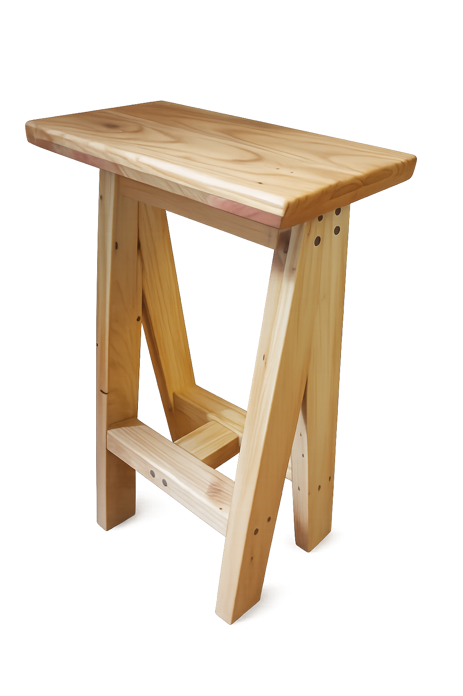

Stool, Douglas Fir
2025 · 360W x 220D x 610H mm
Furniture & Spaces
Tangential Forms explores timber through furniture and spatial objects, working at the intersection of structure and form.

Stool, Douglas Fir
2025 · 360W x 220D x 610H mm


Round Table, Macrocarpa and Oak top, Rimu legs
2025 · 840 x 743 mm

Shelf Chair, pallet pine
2025 · 1060W x 440D x 880H mm

Cable Reel Table, cable reel, pine
2022 · 800L x 440D x 620H mm

Stool/Table, Rimu
2021 · 320L x 200D x 620H mm

Rustic Stools, Rimu
2022 · 300L x 200D x 720H mm
would love to help a vision come to life.
For commissions or enquiries:
hello@tangentialforms.nz